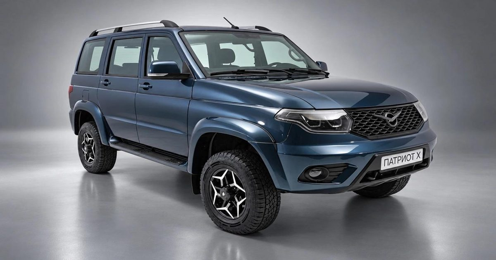

«Русский Prado» задерживается: старт продаж нового УАЗ «Патриот Х» перенесли на конец 2026 года
С 2,0-литровым дизелем и новой 6-ступенчатой коробкой передач УАЗ перенес запуск обновленного внедорожника «Патриот Х».
Если ранее старт продаж ожидался до конца третьего квартала 2026 года, то теперь предприятие рассчитывает вывести новинку на рынок до конца года.
Об этом сообщает Autonews со ссылкой на пресс-службу завода.
Источник изображения: Пресс-службе УАЗа / Chat GPT // Главным техническим новшеством обновленного внедорожника станет дизельная версия с 2,0-литровым турбодвигателем JAC мощностью 136 л.
с.
Производство мотора уже локализовано в России.
В паре с ним будет работать шестиступенчатая механическая коробка передач.
Бензиновая версия сохранит прежний 2,7-литровый атмосферный двигатель мощностью 150 л.
с.
Внешне «Патриот Х» будет отличаться измененной решеткой радиатора, новыми легкосплавными дисками и полностью светодиодными фарами.
В салоне появятся обновленный руль с утолщенным кожаным ободом и российским магниевым каркасом, шайба управления электромеханической раздаточной коробкой, USB-порты разных типов, включая USB-C, и модернизированная центральная консоль.
В оснащение также войдут однозонный климат-контроль, мультимедийная система с 9-дюймовым экраном и двухуровневый подогрев передних сидений.
Ранее УАЗ показывал процесс сборки обновленного внедорожника на конвейере.
Параллельно завод внедряет в автомобили обновленного модельного ряда модернизированную систему активной безопасности TCS НАМИ.
Она включает ABS, противобуксовочную систему, помощь при старте на подъеме и экстренном торможении, а также электронную блокировку дифференциала.